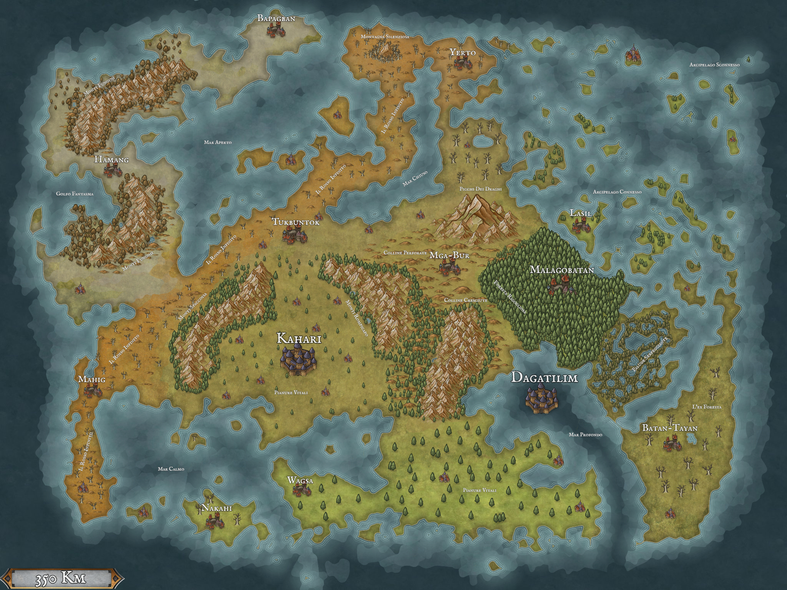

Home
Associazioni
Mondo
NPC
Razze
Regole
Religione
Timeline
Campagna
Indietro
Il continente Djoban

Altri Luogi di Interesse:
Villaggio Anilang
: Primo villaggio a Ovest rispetto ai
Picchi dei Draghi
, direttamente a Sud del
Mare Chiuso
.